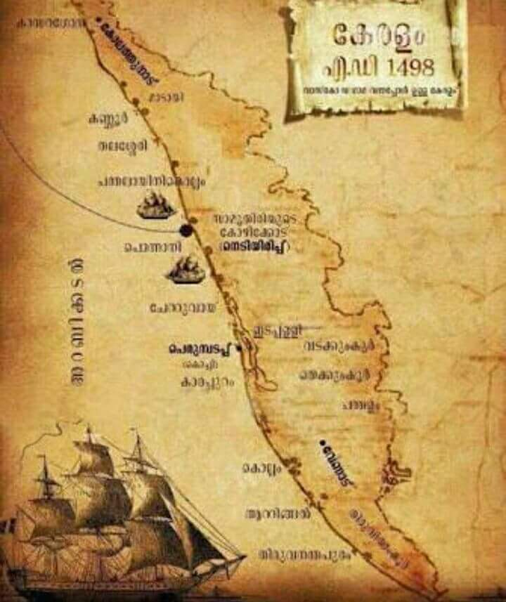
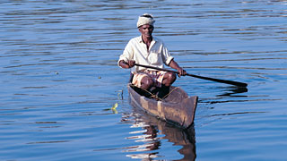
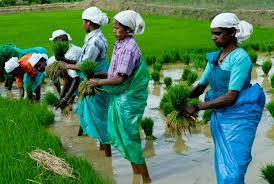

Flanked by the Arabian Sea in the West, the towering Western Ghats in the East and networked by 44 interconnected rivers, Kerala is blessed with a unique set of geographical features that have made it one of the most sought after tourist destinations in Asia. A long shoreline with serene beaches, tranquil stretches of emerald backwaters, lush hill stations and exotic wildlife, are just a few of the wonders that await you once you crossover to the other side. And what's more, each of these charming destinations is only a two hour drive from the other - a singular advantage no other place on the planet can offer.
Kerala prides itself for being the flag bearer for not just how a culture can respect its past but also march forward with growth & progress as well. Hundred percent literacy, world-class health care systems, India's lowest infant mortality and highest life expectancy rates are among a few of the milestones that the people of the state are extremely proud of.

Geography
Kerala is divided into three geographical regions: Highlands, which slope down from the Western Ghats onto the Midlands of undulating hills and valleys into an unbroken 580 km long coastline with many picturesque backwaters, interconnected with canals and rivers. The wild lands are covered with dense forests, while other regions lie under tea and coffee plantations or other forms of cultivation. Most of the state is engulfed in rich greenery which ensures a very calming experience at all times.

Seasons
Bestowed with a pleasant and equable climate throughout the year, Kerala is a tropical land where one can relax and be at ease. The Monsoons (June-September and October-November) and summer (February-May) are the seasons markedly experienced here, while Winter is only a slight drop in temperature from the normal range of 28-32°C. The generally pleasant climate prevalent here is what our guests end up loving

People & Life
Kerala is one of India's most progressive states in terms of social welfare and quality of life. The State boasts of one of India's highest literacy rates, highest life expectancy and lowest child mortality rates. The literacy rate for women in Kerala is one of the highest in all of Asia. Enjoying a unique cosmopolitan viewpoint, the people here, at all levels of society, have greater access to services and opportunities - as well as a greater say in their governance.

History
Kerala's history is closely linked with its commerce, which until recent times revolved around its spice trade. Celebrated as the Spice Coast of India, ancient Kerala played host to travellers and traders from across the world including the Greeks, Romans, Arabs, Chinese, Portuguese, Dutch, French and the British. Almost all of them have left their imprints on this land in some form or the other and that has helped us mould and design our own special way of interacting with the world.
Districts
1. Kasargod
2. Kannur
3. Wayanad
4. Kozhikode
5. Malappuram
6. Palakkad
7. Thrissur
8. Ernakulam
9. Idukki
10. Kottayam
11. Alappuzha
12. Pathanamthitta
13. Kollam
14. Thiruvananthapuram
Location
Kerala is situated on the southwestern coast of India, a country in South Asia.
Airports
Thiruvananthapuram International Airport
Cochin International Airport (CIAL), Nedumbassery
Calicut International Airport, Karipur
Kannur International Airport
MajorCities
Thiruvananthapuram
Kollam
Kochi
Thrissur
Kozhikode